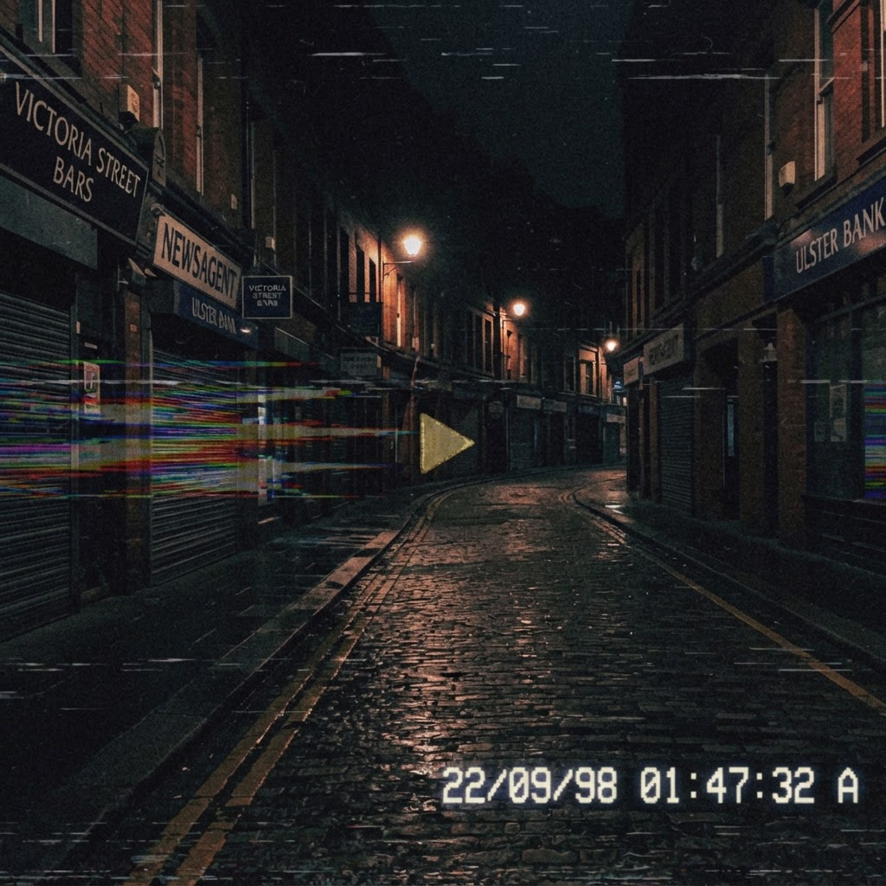

BELFAST IS BROKEN
"Something is happening in this city. I'm documenting everything before it disappears."
I'm not a journalist. I'm not well-known. I just started noticing things around the city that don't add up, and every time I try to tell someone, the details slip. So I'm putting it here while I still remember it correctly.

► PLAY · clip_0043.avi · 00:00 / 02:11VIDEO EXHIBIT A — recovered footage, sender unknown. Plays fine, then the last 6 seconds are never the same twice. [embed placeholder — drop your .mp4 in /assets/videos]
PHOTO EXHIBIT B — the Spire, 03:14. It should be white. Ask anyone who was born here what colour it is. Then ask them again next week.